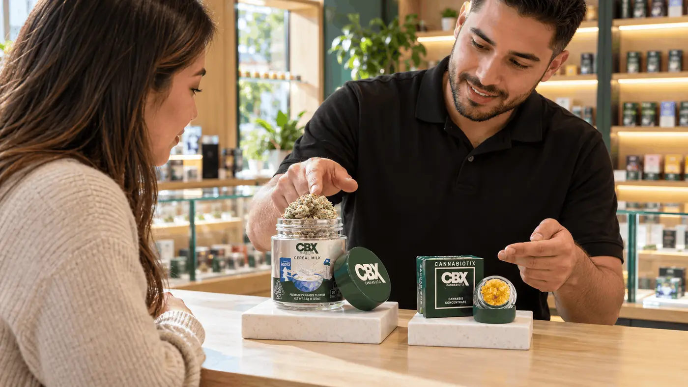

Lost Farm Gummies: How to Choose by Flavor and Effects
September 2, 2026 · 13 min read

Choosing cannabis gummies used to be pretty straightforward: pick a flavor, check the THC, and move on.
Lost Farm gummies make the decision more interesting.
Created by Kiva Confections, Lost Farm focuses on strain-specific edibles made with live resin or solventless live rosin rather than treating cannabis extract as an anonymous ingredient hiding behind fruit flavor. Each product pairs a cannabis cultivar with a complementary gummy flavor, giving shoppers more information to consider than simply “raspberry or pineapple?”
At Wellgreens, current Lost Farm options include pairings built around cultivars such as Wedding Cake, Northern Lights, Ice Cream Cake, Sour Dream, and others. Inventory changes as strains and releases rotate.
So how do you choose?
Start with four things: flavor, cannabis strain, extract type, and labeled cannabinoid content. Then factor in your tolerance and previous experience with edibles instead of expecting the strain name to guarantee one exact effect.
TLDR Quick Guide
Here’s the quick version of choosing Lost Farm gummies:
- Lost Farm is a premium edibles brand from Kiva Confections.
- Its gummies are strain-specific rather than built around flavor alone.
- Products can use 100% live resin or solventless live rosin.
- Lost Farm uses fruit flavors selected to complement particular cannabis cultivars.
- Current California products commonly contain 10mg THC per serving, but always check the specific package.
- Some products can include additional cannabinoids such as CBN.
- Strain labels can provide context, but they don’t guarantee identical effects for every person.
- Edibles can take substantially longer to produce noticeable effects than inhaled cannabis.
- Avoid immediately taking more because the first serving hasn’t kicked in yet.
- Current flavors and strains rotate, so check the live dispensary menu.
You can browse other Wellgreens cannabis brands or check in-stock cannabis products to see what’s currently available.
Detailed Breakdown

What Are Lost Farm Gummies?
Lost Farm launched in 2020 as part of Kiva Confections’ cannabis edibles portfolio.
The idea behind the brand is relatively simple but distinctive:
Make the cannabis strain part of the edible’s identity.
Many conventional THC gummies primarily emphasize fruit flavor and potency. Lost Farm instead pairs the confection flavor with a specific cannabis cultivar and uses live resin or live rosin extract.
That creates product names along the lines of:
- Raspberry × Wedding Cake
- Pink Pineapple × Sour Dream
- Watermelon × Ice Cream Cake
- Black Raspberry × Northern Lights
- Citrus Spritz × Pineapple Express
Availability changes, so those examples shouldn’t be treated as a permanent menu.
The point is the format: fruit flavor × cannabis strain.

What Makes Lost Farm Gummies Different?
The extract is a major part of the answer.
Lost Farm began with strain-specific live-resin edibles and has expanded to include solventless live-rosin products.
Those approaches differ from edibles made primarily with highly refined THC distillate.
Live Resin
Live resin starts with cannabis that is flash-frozen shortly after harvest rather than first undergoing the conventional drying and curing process.
The goal is to preserve more of the plant’s volatile aromatic compounds and strain-specific characteristics before extraction.
Live Rosin
Live rosin also typically starts with fresh-frozen cannabis, but it uses a solventless production process.
The plant material can be processed into hash and then pressed using heat and pressure to separate resinous material without conventional hydrocarbon extraction solvents.
Lost Farm offers products using both approaches.
Why Does Strain-Specific Matter?
A typical fruit gummy can tell you almost nothing about the cannabis source from its flavor name.
“Strawberry” describes the confection.
It doesn’t necessarily tell you anything about the cultivar behind the THC.
Lost Farm deliberately connects those two pieces.
A Raspberry × Wedding Cake gummy, for example, identifies both the fruit flavor and the cannabis cultivar used for the extract.
That gives experienced shoppers another dimension to consider.

Does the Cannabis Strain Affect the Flavor?
It can contribute.
Cannabis cultivars have their own aromatic compounds, including terpenes, that can produce notes people describe as:
- Citrus
- Berry
- Floral
- Herbal
- Earthy
- Piney
- Creamy
- Peppery
- Fuel-like
Lost Farm pairs fruit flavors with cannabis extracts rather than trying to make the plant completely disappear behind sugar.
That means some products may have more noticeable cannabis character than a highly refined, flavor-dominant edible.
For some shoppers, that’s exactly the appeal.
How Should You Choose Lost Farm Gummies by Flavor?
Start with what you actually enjoy eating.
Revolutionary, we know.
If you typically prefer bright and tart flavors, look toward options described with:
- Citrus
- Lemonade
- Raspberry
- Pineapple
- Sour fruit
If you prefer sweeter or richer profiles, you might be drawn toward:
- Berry
- Watermelon
- Tropical fruit
- Peach
- Plum
Then look at the paired strain.
The fruit flavor tells you what the confection is designed to taste like, while the cultivar tells you more about the cannabis side of the product.

Don’t Let the Flavor Name Make the Entire Decision
Two gummies that both taste fruity can contain extracts from completely different cultivars.
That’s where shoppers sometimes miss the point of Lost Farm gummies.
For example, choosing between a pineapple-flavored product and a raspberry product isn’t simply choosing candy flavors.
You’re also potentially comparing:
- Different genetics
- Different terpene profiles
- Live resin versus live rosin
- Different cannabinoid formulations
Flip the package over.
The useful information isn’t all on the front.
How Should You Choose Lost Farm Gummies by Effects?
This requires more nuance.
Cannabis brands and dispensary menus may describe products using terms such as:
- Indica
- Sativa
- Hybrid
- Uplifting
- Relaxing
- Balanced
Those descriptions can be useful shopping shorthand, but they aren’t promises.
Cannabis experiences can vary based on:
- THC dose
- Other cannabinoids
- Individual tolerance
- Previous cannabis use
- Metabolism
- Food intake
- Product formulation
- Personal sensitivity
So a strain that one consumer describes as relaxing may not produce precisely the same experience for someone else.
Use effect descriptions as context, not a guarantee.

What About Indica, Sativa, and Hybrid?
These labels remain common because they’re familiar and easy to scan.
But modern cannabis genetics are complex.
Many commercial cultivars are hybrids, and broad indica/sativa categories don’t capture the complete cannabinoid and terpene profile of a product.
When comparing Lost Farm gummies, consider the category alongside:
- The specific strain
- THC per serving
- Other cannabinoids
- Extract type
- Your previous experience
The more information you use, the less you’re relying on three very broad words to make the decision.
THC Per Serving Matters More Than Hype
Lost Farm’s current California lineup commonly features products with 10mg THC servings and 100mg THC packages, although formulations can differ and product lines can change.
Always read the package you’re actually purchasing.
Don’t rely on a product review from another state.
Kiva specifically notes that cannabinoid content and ingredients can vary depending on where products are manufactured and sold.

Is 10mg THC a Lot?
That depends heavily on the individual.
A dose that feels familiar to an experienced edible consumer can be much more intense for someone with little or no edible tolerance.
This is why the label matters.
If you’re inexperienced with cannabis edibles, don’t treat the maximum serving size or somebody else’s usual dose as your personal target.
More isn’t automatically better.
Why Edible Timing Matters
One of the easiest mistakes with edibles is impatience.
Inhaled cannabis generally produces noticeable effects much faster than conventional swallowed edibles.
With a gummy, onset can take considerably longer.
That creates the classic problem:
“I don’t feel anything. I’ll have another.”
Then both servings arrive for the party.
Kiva’s current product guidance on several Lost Farm gummies advises waiting at least two hours before considering additional consumption.
Follow the current package instructions for your specific product.

What Does “Full Spectrum” Mean Here?
Lost Farm describes its live-resin and live-rosin products as providing a fuller representation of the source cannabis than highly refined distillate-based edibles.
The idea is to retain a broader mixture of plant compounds associated with the particular cultivar.
That can include:
- Cannabinoids
- Terpenes
- Other naturally occurring cannabis compounds
“Full spectrum” doesn’t mean the product will produce one guaranteed type of experience.
It describes the composition and product philosophy more than a predictable outcome for every consumer.
Live Resin or Live Rosin: Which Should You Choose?
Neither automatically wins.
Choose based on what matters to you.
Consider Live Resin If:
- You’re interested in strain-specific cannabis extract.
- You like Lost Farm’s original product concept.
- The particular strain and flavor combination appeals to you.
- You don’t specifically require solventless processing.
Consider Live Rosin If:
- Solventless extraction is a priority.
- You’re interested in rosin-based edibles.
- The available cultivar matches your preferences.
- You’re willing to compare product-by-product rather than simply choosing the category name.
The extract matters, but so does everything attached to it.

Some Lost Farm Gummies Include Other Cannabinoids
Not every product necessarily follows a THC-only formula.
For example, Lost Farm currently offers a Black Raspberry × Northern Lights live-resin gummy formulation that pairs THC with CBN.
That makes cannabinoid ratios another useful comparison point.
Don’t assume two Lost Farm packages with similar artwork contain the same formulation.
Read the cannabinoid information carefully.
Does CBN Automatically Mean “Sleep”?
CBN frequently appears in cannabis products marketed around nighttime use.
That doesn’t mean a CBN-containing gummy is guaranteed to make every consumer sleep or should be treated as a sleep medication.
Individual response varies, and research into many minor cannabinoids is still developing.
Choose cannabinoid formulations based on accurate labeling and realistic expectations rather than treating packaging language as a medical promise.

Lost Farm vs Camino Gummies
Lost Farm and Camino are both associated with Kiva, but their product positioning isn’t identical.
Lost Farm emphasizes strain-specific live resin and live rosin.
Camino organizes many products more explicitly around flavor, cannabinoid combinations, terpene formulations, and intended experience categories.
If you’re comparing the two, Wellgreens’ Camino edibles guide covering flavors, effects, and THC strengths provides more detail.
Which Is Better: Lost Farm or Camino?
Neither brand is universally better.
Lost Farm may appeal more if your shopping process begins with:
“Which cannabis strain is in this?”
Camino may be particularly appealing if your process begins with:
“Which formulation or experience category am I looking for?”
Wellgreens also covers Camino gummies and their commonly marketed effect categories if you’re deciding between Kiva’s different gummy lines.

Read the Ingredients
Cannabis isn’t the only ingredient that matters.
Before purchasing any edible, check the package for:
- Ingredients
- Allergens
- Serving size
- Total servings
- THC
- Other cannabinoids
- Storage instructions
Lost Farm products are plant-based, but that doesn’t eliminate the need to review the specific ingredient list.
Formulations can also vary by product and jurisdiction.
If you have dietary restrictions or allergies, the package, not an old online review, is the source to check.
Don’t Confuse One Gummy With One Package
This is important.
A cannabis edible package can contain multiple servings.
If one gummy contains 10mg THC and a package contains ten gummies, that’s 100mg THC total.
Read both:
THC per serving and THC per package.
Those numbers answer very different questions.

Keep Edibles Away From Children and Pets
Lost Farm gummies look like confectionery because, well, they are confectionery.
That makes secure storage essential.
Cannabis edibles should be:
- Kept in their original packaging when possible
- Stored securely
- Kept away from children
- Kept away from pets
- Clearly separated from ordinary snacks and candy
Don’t leave cannabis gummies in a communal snack drawer.
A colorful edible shouldn’t get the opportunity to introduce itself as regular candy.
Don’t Drive After Consuming THC
THC can impair driving ability and reaction time.
Don’t drive or operate machinery while impaired.
If you’re trying a new Lost Farm gummies product, plan ahead rather than assuming you’ll know exactly how it affects you.
Edibles can also last considerably longer than inhaled cannabis.
Transportation should be sorted out before consumption, not afterward.

Don’t Mix Cannabis and Alcohol Casually
Combining intoxicating substances can increase impairment and produce unpredictable experiences.
If you’re consuming THC, be cautious about combining it with alcohol or other substances.
People taking medications or managing health conditions should seek appropriate professional guidance about possible interactions.
Cannabis gummies are recreational products, not a chemistry challenge.
How to Compare Two Lost Farm Products
Can’t decide between two flavors?
Use this checklist.
1. Compare Flavor
Which fruit profile actually sounds better?
2. Compare Strain
Look at the cannabis cultivar paired with each flavor.
3. Compare Extract Type
Is it live resin or solventless live rosin?
4. Compare Cannabinoids
Check THC per serving and any additional cannabinoids.
5. Compare Your Experience
Have you used either strain, cannabinoid ratio, or similar edible before?
6. Compare Freshness and Packaging
Review the current package information.
7. Compare Price
Check current dispensary pricing rather than relying on an old menu.
Now you’re making a meaningful comparison.

Where Can You Find Lost Farm Gummies in San Diego?
Wellgreens Dispensary carries Lost Farm among its selection of California cannabis brands.
Wellgreens currently lists multiple Lost Farm gummies and chews, but specific flavors and cultivars can change as products sell through and new releases arrive.
Before making a special trip, check in-stock cannabis products.
That is especially useful when you’re hunting for a specific strain-and-flavor pairing.
Can You Get Lost Farm Gummies Delivered?
Eligible adult customers within supported San Diego County service areas can review Wellgreens Delivery for current ordering options.
Delivery inventory and availability can depend on the address and current menu.
Check the live menu before assuming a particular Lost Farm product is available for delivery.

Which Lost Farm Gummies Should You Choose?
There’s no universal “best” flavor or strain.
Instead, build your choice around:
- Flavor preference
- Strain
- Live resin or live rosin
- THC per serving
- Other cannabinoids
- Your tolerance and previous experience
- Current availability
That’s the advantage of Lost Farm’s strain-specific approach.
You have more information to work with.
Use it.
Key Takeaways
- Lost Farm gummies are made by Kiva Confections and emphasize strain-specific cannabis extracts.
- The brand offers both live-resin and solventless live-rosin products.
- Flavor and strain are separate considerations. A fruit flavor tells you about the confection, while the cultivar tells you about the cannabis source.
- Effect descriptions aren’t guarantees. Individual responses to THC, strains, and other cannabinoids can vary.
- Read THC per serving and THC per package separately. They aren’t interchangeable numbers.
- Some Lost Farm products include additional cannabinoids such as CBN. Check the exact formulation before buying.
- Don’t immediately take more because an edible feels slow. Conventional swallowed edibles can take substantial time to produce noticeable effects; follow package guidance.
- Lost Farm and Camino take different approaches. Lost Farm emphasizes strain-specific live resin and rosin, while Camino offers its own flavor and formulation system.
- Store cannabis gummies securely away from children and pets, and don’t drive while impaired.
- Check current inventory before choosing. Browse Wellgreens to compare currently available Lost Farm products and other regulated cannabis edibles.
FAQs
01What makes Lost Farm gummies different from regular THC gummies?
Lost Farm gummies emphasize strain-specific live resin or solventless live rosin rather than treating THC as an anonymous ingredient. Individual products pair a fruit flavor with a named cannabis cultivar, allowing shoppers to consider both sides of the formulation. That approach may appeal to consumers who care about cannabis genetics and extract type as much as candy flavor.
02How do I choose a Lost Farm gummy flavor?
Start with fruit flavors you already enjoy, then examine the cannabis strain paired with each option. Compare whether the product contains live resin or live rosin and review its labeled cannabinoid content before deciding. Current flavors rotate, so the best choice depends partly on what’s available when you shop.
03How long do Lost Farm gummies take to work?
Edible onset varies between individuals and can be influenced by factors such as metabolism, food intake, dose, and previous cannabis experience. Kiva’s current guidance on several Lost Farm products says to wait at least two hours before considering additional consumption. Always follow the instructions on your specific package rather than assuming another person’s timing will match yours.
04Are Lost Farm gummies indica or sativa?
Lost Farm uses specific cannabis cultivars, so individual products may be associated with indica-dominant, sativa-dominant, or hybrid genetics. Those categories can provide shopping context but don’t guarantee a particular effect for every consumer. Check the exact strain, cannabinoid formulation, and package information for the Lost Farm product you’re considering.
05Where can I buy Lost Farm gummies in San Diego?
Wellgreens currently lists multiple Lost Farm gummies and chews across its San Diego-area dispensaries. Specific strains, flavors, and live-resin or live-rosin products can rotate, so check current inventory before traveling for one particular item. Eligible adults in supported areas can also review Wellgreens’ delivery options to see which Lost Farm products are currently available.
Shop this guide
Keep reading

Why Is Your Cake Disposable Vape Not Hitting and What Should You Check?
You pick up your Cake disposable vape, take a draw, and… nothing. No vapor, no response, just a device that seems to have called it quits…

Cannabiotix Flower vs Concentrates: Which Product Type Fits Your Needs?
If you’re comparing Cannabiotix flower vs concentrates, you’ve probably noticed that both categories offer distinct characteristics, from…

Live Rosin vs Live Resin: Which Concentrate Should You Choose?
Two cannabis concentrates. Similar names. Very different production methods. If you’ve been comparing live rosin vs…
Ready to Start?
Premium cannabis. Expert guidance. Fast pickup. Join thousands of San Diegans who trust Wellgreens.